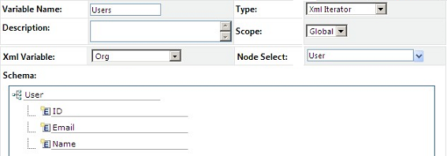
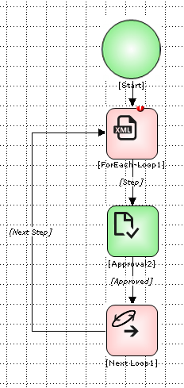
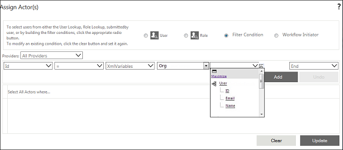
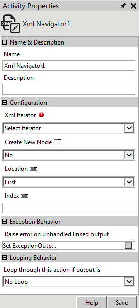
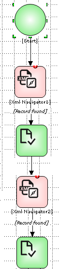

No
XML Iterator Variables can be used in any of the following ways:
Example of XML Iterator Variable in For-Each Loop
In this example, the XML Iterator Variable is used to get approval from all managers in the Managers.XML file containing the list of all the users who are managers.
Managers.XML file
<Managers>
<Users>
<User id=1>
<Name>John</name>
</User>
<User id=2>
<Name>Jim</name>
</User>
<User id=3>
<Name>Victor</name>
</User>
<User id=4>
<Name>Andy</name>
</User>
</Users>
</ Managers >
Step 1: XML Iterator Variable is defined for users. The node Users holds the collection of managers.
XML Iterator Variable for Managerial Users

Step 2: The approval activity is set within a For-Each Loop activity.
For-Each Loop Activity for Looping Approvals

Step 3: The XML Iterator Variable 'Users' is defined in XML Iterator field of For-Each Loop properties. The Execution type is set to Serial as the approval is to be processed serially.
Note: The Execution type is set to Parallel as the approval is to be processed simultaneously by all approvers. When the Execution type is Parallel, the Next Loop activity is not required.
For-Each Loop Property for XML Iterator
Step 4: The XML Iterator variable is specified in the condition for selecting actors for the approval.
Actor Selection for Approval Activity

Step 5: When the above workflow is invoked, the Workflow Engine resolves "XMLVariables.users.user.ID". It gets the ID of each manager and assigns the task to that manager.
Example of XML Navigator Activity
A company allocates new laptops to employees as and when new inventories are received based on date of requisition. Allotments are to be approved by the manager of the requisitions user. Users with requisitions are added to a waiting list by the Facilities Management System. Allotments are made to the user at the top of the list. When the allotment is complete, the user is removed from the list. If a manager rejects the allotment, the allotment is made to the next person in the waiting list. This example demonstrates how the XML Navigator Activity is used to automate a process.
Step 1: A global XML Iterator variable is defined for the node users.
XML Iterator Variable for Users
Step 2: The XML Navigator activity is added to the workflow with Location set to First.
XML Navigator Properties

Step 3: An Approval activity is added after the XML Navigator Activity that sends an approval task to the manager of the user at the top of the list. The XMLNavigator links to Approval only if a record is found in the waiting list.
Step 4: The Approval task is linked to another XML Navigator Activity with the property set to Next.
Step 5: The following figure depicts the workflow after adding these two properties.
